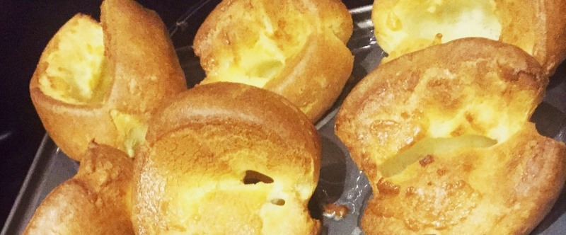

Йоркширские пудинги

- TODO
Включить духовку на 190 градусов. Взять форму для пудингов и подсолнечное масло. Первый ряд пустой формы залить полностью маслом, затем наклонить форму так, чтобы масло стекло к незаполненным ячейкам и равномерно распределилось. Поставить форму с маслом на 15 минут в духовку.
4 яйца взбить венчиком в большой миске. Добавить 200 мл. молока, 200 гр. муки и щепотку соли. Венчиком все хорошенько перемешать. Перелить в емкость с носиком для удобства. Достать форму из духовки, заполнить каждую ячейку кляром почти до верху, помогая ложкой, чтобы кляр не разливался между ячейками. Поставить в духовку и не открывать дверцу до конца приготовления. Готовятся примерно 20-25 минут.
 Назад к списку рецептов
Назад к списку рецептов